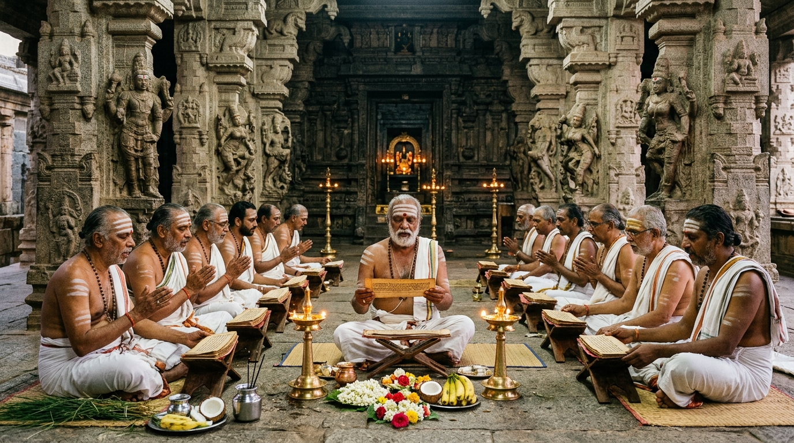

SRI KRISHNA YAJUR VEDA PARAYANA TRUST
ஸ்ரீ கிருஷ்ண யஜுர் வேத பாராயண டிரஸ்ட் - சிதம்பரம்
Thillai Nataraja Kshetram, Chidambaram
॥ सत्यमेव जयते ॥
Truth Alone Triumphs
The Sri Krishna Yajur Veda Parayana Trust was established with the sole divine mission of preserving, nurturing, and propagating the authentic oral recitation of the Krishna Yajur Veda (Taittiriya Shakha) in the sacred presence of Lord Thillai Nataraja at Chidambaram.
For centuries, the unbroken vibration of Vedic mantras echoed through the stone corridors of Chidambaram. Recognizing the urgent modern need to safeguard this priceless heritage, our trust provides lifelong support to Vedic scholars, educates young students in traditional Gurukula style, and feeds thousands through daily Annadanam.
Trust PAN: ABFTS8847M
Nature of Activities: Religious cum Charitable
80G Provisional Approval (Form 10AC): URN: ABFTS8847MF20241 | DIN: ABFTS8847MF2024101 (AY 2024-25 to AY 2026-27).
All donations are eligible for tax deduction under Section 80G(5)(iv) of the Income Tax Act, 1961.


Hereditary Podu Dikshithar custodian of Sri Sabanayagar Koil (Chidambaram Nataraja Temple). Under his spiritual stewardship, the sacred oral chanting of Krishna Yajur Veda (Taittiriya Shakha) and special devotee Sankalpams are conducted daily with pure Vedic sanctity at the Kanaka Sabha.
Ensuring that not a single day passes without the chanting of Krishna Yajur Veda Samhita at the Kanaka Sabha of Lord Nataraja by qualified Salakshana Ghanapathis.
A residential Gurukula where 40+ young students undergo a rigorous 8-to-10 year Veda Adhyayanam course under traditional Acharyas, with 100% free food, clothing, and shelter.
Providing monthly Sambhavana and lifetime medical aid to aged Vedic scholars who have dedicated their lives to mastering and teaching the Vedas.
Serving sanctified vegetarian meals (Mahaprasadam) daily to over 1,000 visiting pilgrims, sadhus, sannyasins, and temple visitors at our East Sannidhi dining hall.
Sheltering 70+ indigenous Desi cows (Kangeyam, Umblachery, Gir). Pure milk and ghee are offered exclusively for Lord Nataraja's daily Abhishekam and Yajna homams.
Digitizing and cataloging rare palm-leaf manuscripts and ancient Grantha texts of Krishna Yajur Veda Prayoga preserved in Chidambaram homes.
Managing Trustee & Salakshana Ghanapathi
40+ years dedicated to Krishna Yajur Veda Adhyayanam & Chidambaram Temple Seva.
Trustee & Representative, Podu Dikshitars
Senior hereditary priest coordinating Kanaka Sabha rituals and Parayanam permissions.
Trustee & Financial Controller
Chartered Accountant ensuring complete regulatory compliance and transparent auditing.
Every contribution made to the trust directly supports Vedic scholars, Patashala students, and Nitya Annadanam at Chidambaram.
Make an E-Hundi Donation (80G Tax Benefit)